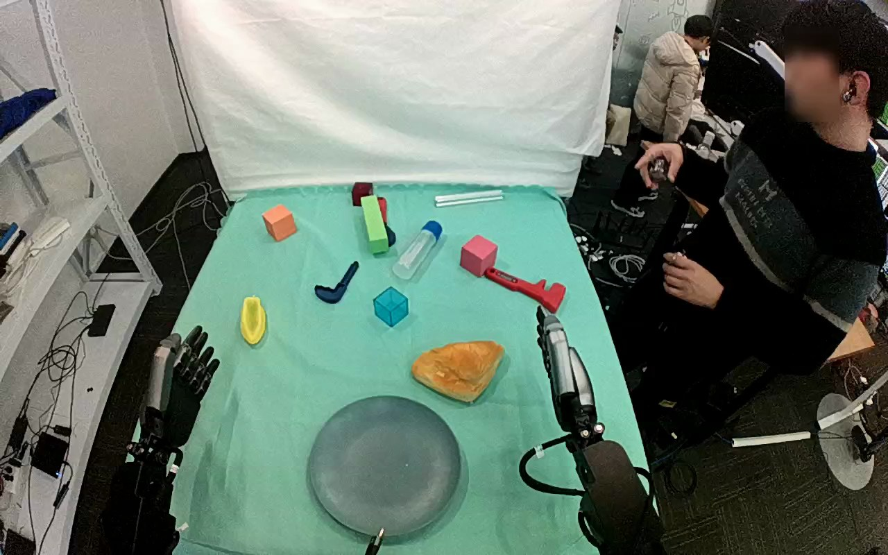

ActionNet · 01JN0Y324H2ZFDTSYD
01jn0y324h2zfdtsyd

Annotation
From the dedicated visual review of this video (humanoid_action_v1). Plain text · JSON
Observed outcome
- Selected action
success
- Observed end state
Pastry released and resting flat inside gray plate; active hand withdrawn.
- Source overall label
not inferred from task code npnp
- Independent subtasks
False
Hand roles
- Lower right visible arm
Sole manipulator: encloses pastry, bears it during lift and transport, lowers onto plate, releases and retracts.
- Lower left visible arm
Remains beside the table with open hand throughout; no pastry, plate or other support contact observed.
Coordination
No bimanual contact, transfer, human handoff or object support by the other hand is visible.
Robot-side evidence
- Active arm
Arm entering from lower right of the conditioning image.
- Inactive arm
Arm entering from lower left, with open hand beside table.
- Anatomical side
not independently established
- Evidence
Both forearms enter from the lower edges in a forward-looking top view; neither shoulder nor torso attachment is visible. Image side is observable, but it is not used as definitive anatomical proof.
- Prompt convention
unambiguous visible-arm wording
Chronology
- Frame start
0
- Frame end
38
- Observation
Golden-brown pastry rests above and to image right of gray plate. Active hand starts upright and moves toward pastry; other hand remains open at image left.
- Frame start
40
- Frame end
84
- Observation
Active hand opens and descends around pastry. Its lower opposing digit nears the pastry right edge while other digits remain above; no lift yet.
- Frame start
86
- Frame end
160
- Observation
Hand rotates over pastry and curls around opposite sides, progressively establishing the grasp. At native frame 118 the pastry is still near its original table position; frame 160 shows enclosure around its body. Small adjustments are phases of the same grasp.
- Frame start
162
- Frame end
198
- Observation
Closed hand lifts pastry clear of tabletop; frame 194 shows visible clearance and pastry supported only by active hand.
- Frame start
200
- Frame end
286
- Observation
Hand maintains its grasp while moving pastry toward and over gray plate. Pastry changes orientation with the hand as a whole; no separate mechanism motion or other hand contact.
- Frame start
288
- Frame end
318
- Observation
Pastry is lowered within plate rim. By frame 318 it appears flat on the plate while active digits begin spreading; hand still overlaps its right side.
- Frame start
320
- Frame end
354
- Observation
Active hand opens and clears the pastry. Native frames 336 and 342 show pastry remaining flat on plate as digits separate; frame 354 shows open hand above it.
- Frame start
356
- Frame end
431
- Observation
Open hand withdraws upward/right and returns upright. Pastry remains stationary inside the plate through final frame 431; other hand has no contact.
Differences from the publisher annotation
- Annotated croissant has a triangular golden-brown pastry appearance; prompt uses appearance-based pastry wording without asserting exact food identity.
- Placement outcome agrees with annotation.
Uncertainties
- Robot anatomical left/right cannot be independently confirmed from visible torso/shoulder attachment.
- Exact first contact and plate-support transition are partly occluded by the hand; frame ranges describe visible changes without claiming subframe precision.
- Source top-camera view shifts slightly relative to the table over the clip; required shared fixed-camera sentence is retained as the generation constraint.
Complete review record action_review.json
{
"dataset": "ActionNet",
"episode_id": "01JN0Y324H2ZFDTSYD",
"view": "top",
"review_scope": "Complete original single-task clip; no trimming, resizing or re-encoding.",
"prompt_protocol": "humanoid_action_v1",
"prompt_provenance": "visually_authored_from_video_and_initial_frame",
"protocol_application": "Applied as an analogous extension to the Fourier humanoid sample; visible-arm description used because shoulder attachment is outside the top view.",
"source_video": "../../original/top/rgb.mp4",
"conditioning_image": "../first_frame.png",
"prompt_path": "../actiongeneration_prompt.txt",
"inspection_coverage": {
"decoded_frame_count": 432,
"frame_index_convention": "zero-based",
"contact_sheet_frames": {
"first": 0,
"last": 430,
"stride": 2,
"count": 216
},
"native_resolution_frames": [
0,
52,
76,
118,
160,
194,
220,
260,
292,
318,
336,
342,
354,
370,
431
],
"native_resolution": [
1280,
800
],
"initial_png_inspected_after_full_sequence": true,
"temporary_evidence_only": true
},
"anatomical_side_evidence": {
"active_arm": "Arm entering from lower right of the conditioning image.",
"inactive_arm": "Arm entering from lower left, with open hand beside table.",
"anatomical_side": "not independently established",
"evidence": "Both forearms enter from the lower edges in a forward-looking top view; neither shoulder nor torso attachment is visible. Image side is observable, but it is not used as definitive anatomical proof.",
"prompt_convention": "unambiguous visible-arm wording"
},
"arm_roles": {
"lower_right_visible_arm": "Sole manipulator: encloses pastry, bears it during lift and transport, lowers onto plate, releases and retracts.",
"lower_left_visible_arm": "Remains beside the table with open hand throughout; no pastry, plate or other support contact observed."
},
"coordination": "No bimanual contact, transfer, human handoff or object support by the other hand is visible.",
"chronology": [
{
"frame_start": 0,
"frame_end": 38,
"observation": "Golden-brown pastry rests above and to image right of gray plate. Active hand starts upright and moves toward pastry; other hand remains open at image left."
},
{
"frame_start": 40,
"frame_end": 84,
"observation": "Active hand opens and descends around pastry. Its lower opposing digit nears the pastry right edge while other digits remain above; no lift yet."
},
{
"frame_start": 86,
"frame_end": 160,
"observation": "Hand rotates over pastry and curls around opposite sides, progressively establishing the grasp. At native frame 118 the pastry is still near its original table position; frame 160 shows enclosure around its body. Small adjustments are phases of the same grasp."
},
{
"frame_start": 162,
"frame_end": 198,
"observation": "Closed hand lifts pastry clear of tabletop; frame 194 shows visible clearance and pastry supported only by active hand."
},
{
"frame_start": 200,
"frame_end": 286,
"observation": "Hand maintains its grasp while moving pastry toward and over gray plate. Pastry changes orientation with the hand as a whole; no separate mechanism motion or other hand contact."
},
{
"frame_start": 288,
"frame_end": 318,
"observation": "Pastry is lowered within plate rim. By frame 318 it appears flat on the plate while active digits begin spreading; hand still overlaps its right side."
},
{
"frame_start": 320,
"frame_end": 354,
"observation": "Active hand opens and clears the pastry. Native frames 336 and 342 show pastry remaining flat on plate as digits separate; frame 354 shows open hand above it."
},
{
"frame_start": 356,
"frame_end": 431,
"observation": "Open hand withdraws upward/right and returns upright. Pastry remains stationary inside the plate through final frame 431; other hand has no contact."
}
],
"outcome": {
"selected_action": "success",
"observed_end_state": "Pastry released and resting flat inside gray plate; active hand withdrawn.",
"source_overall_label": "not inferred from task code npnp",
"independent_subtasks": false
},
"source_annotation": {
"original_text": "Pick up the croissant and put it on a plate",
"preserved_verbatim_file": "../../original/task_prompt.txt",
"task": "npnp",
"machine_id": "T1"
},
"source_annotation_discrepancies": [
"Annotated croissant has a triangular golden-brown pastry appearance; prompt uses appearance-based pastry wording without asserting exact food identity.",
"Placement outcome agrees with annotation."
],
"uncertainties": [
"Robot anatomical left/right cannot be independently confirmed from visible torso/shoulder attachment.",
"Exact first contact and plate-support transition are partly occluded by the hand; frame ranges describe visible changes without claiming subframe precision.",
"Source top-camera view shifts slightly relative to the table over the clip; required shared fixed-camera sentence is retained as the generation constraint."
],
"final_checks": {
"target_identifiable_in_initial_frame": true,
"prompt_matches_complete_retained_sequence": true,
"visible_release_and_end_state_confirmed": true,
"no_evidence_frame_directory_in_generation_input": true
}
}